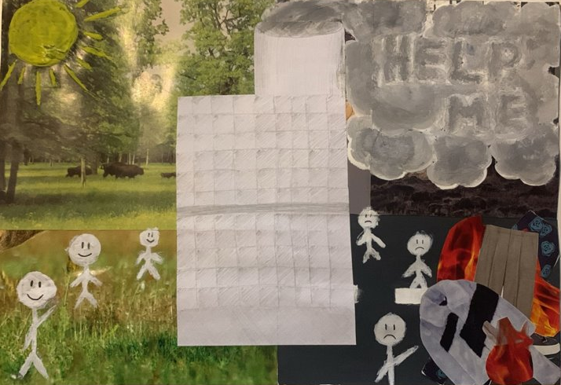
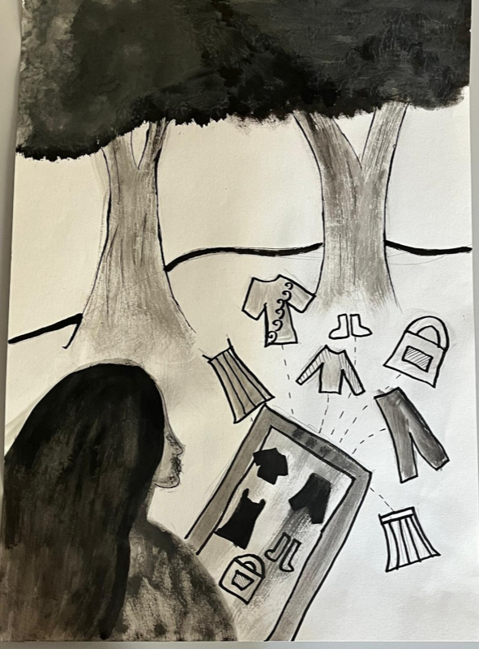
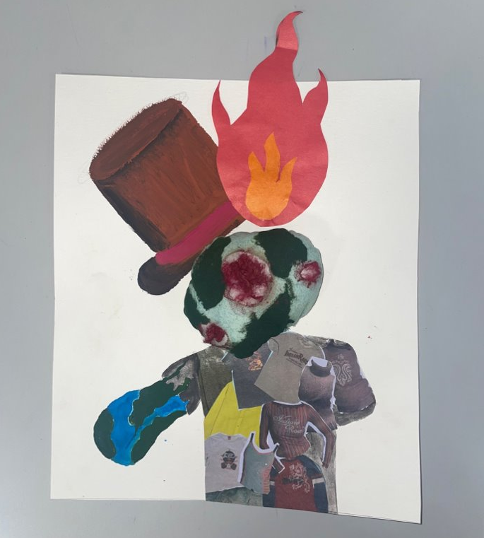
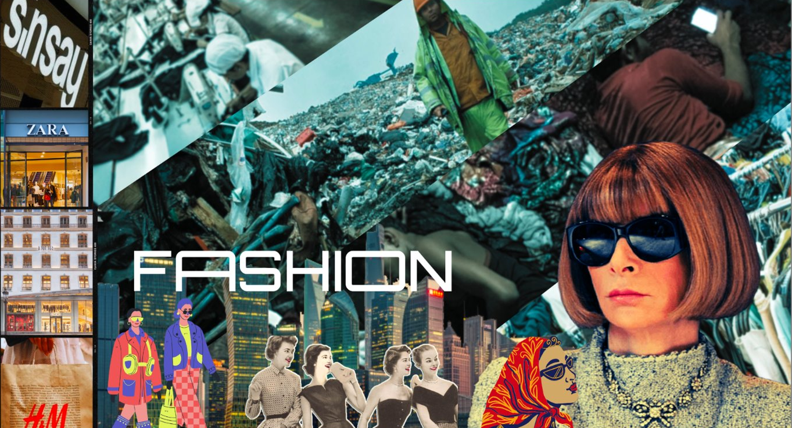
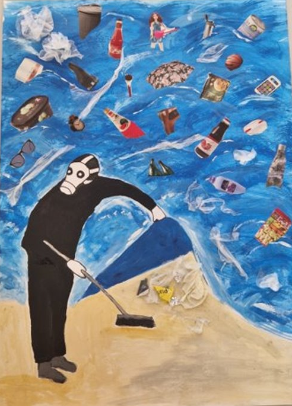
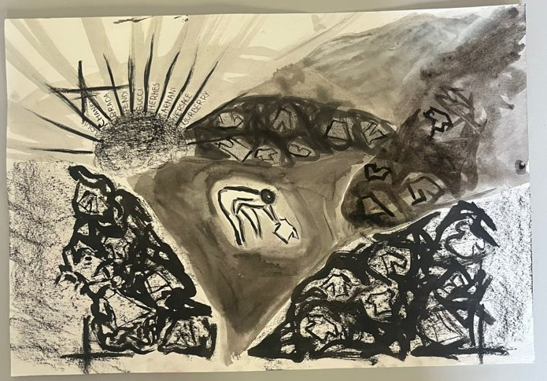

Patērētājsabiedribas mākslasdarbi

Par mājaslapu
Patērētājsabiedribu cilvēki var intepretēt vairākos veidos. Te ir galerija ar 11. klases skolēnu darbiem ar savām intepretācijām. Vienā objektā ir parādīts:
- Mākslasdarba bilde,
- Mākslasdarba autors
- autora eseja, kas raksturo mākslasdarbu

Fast fashion
Autori: Helēna Garkāja, Gerda Brosko-Šmite
Eseja: Fast fashion ir modes industrijas konceptuāls un praktisks elements, kas pēdējos ;ados ir kjuvis par aktuālu tēmu. Mēs aprakstisim šis parādibas būtibu, ietekmi uz :ilvēkiem un apkārtējo vidi, kā ari tās ilgtermiņa sekas.
rā ir ātra, masveida apģērbu ražošana un izplatišana, kas tiek veikta paātrinātos tempos, lai ātri apmierinātu jaunu modes tendenču pieprasījumu. Tās galvenais mērkis ir piedāvāt patērētājiem lētus apģērbus, kas būtu aktuāli un pieejami tieši tagad. Tas nozimē, ka apģērbu kolekcijas tiek izstrādātas un ražotas Joti ātri, bieži iien nespējot saglabāt kvalitāti vai ilgmažību.
rās ietekme uz cilvēkiem ir jūtama gan pozitīvā, gan negativā veidā. Tā piedāvā lespēju patērētājiem sekot līdzi aktuālajām modes tendencēm un izskatities stilīgi par >amērā zemām cenām. Tomēr tas var veicināt ari neveseligas pirkšanas paradumus, piemēram, impulsivu pirkšanu un pārmērigu patēriņu.
Vēl viena būtiska fast fashion ietekme ir vides iznīcināšana. Atra ražošanas cikla dēj tiek izmantots liels daudzums resursu, piemēram, ūdens un enerģija, un raditi lieli 3tkritumu daudzumi. Tādējādi šī industrija veicina piesārņojumu un resursu izsikumu, kas ir svarigi jautājumi mūsdienu pasaulē.
rurklāt fast fashion rada cilvēkiem arī jautājumus par darba apstākjiem un darbinieku izmantošanu, jo daudzi apģērbu ražotāji izmanto lētu darbaspēku valstis ar zemiem algas limeņiem.
Fast fashion ir fenomens modes industrijā, kas ir ātri kjuvis par ietekmigu spēlētāju, piedāvājot ātru un lētu apģērbu pieejamibu patērētājiem. Taču, ja turpināsim atbalstit fast fashion trendus tad tas var negatīvi ietekmēt ne tikai dabu, bet ari mūsu nākotni.

Abstraktā daba
Autori: Petra Pildava, Melānija Šica
Eseja: Ātrā mode ir kļuvusī par dominējošu spēku globālajā apģērbu nozarē, pārveidojot veidu, kā cilvēki iepērkas un kā tiek ražots un platīts apģērbs. "SHEIN", tiešsaistes modes tirgotājs, kurš darbojas Ķīnā, ir strauji cēlies līdz pašreizējam stāvoklim kā galvenais šīs endences piemērs. Lai gan ātrā mode piedāvā pieejamu un stilīgu apgērbu patērētājiem, tai ir virkne ētisku, vides un sociālu bažu. Šajā esejā mēs izpētīsim ātrās modes koncepciju un padzilināsimies "SHEIN" piemērā, lai izprastu tās ietekmi uz sabiedrību un modes nozari. Ātrā mode ir uzņēmējdarbības modelis, kas raksturojas ar ātrām, lētām un "trendiem" atbilstošām apgērbu kolekcijām, bieži reagējot uz jaunākajām modes tendencēm. Tā ir ieguvusi popularitāti, piedāvājot iespēju ātri piegādāt pieejamu apgērbu patērētājiem, jaujot viņiem sekot nebeidzamajām stilu izmaiņām. Zīmoli, piemēram, "SHEIN", ir izmantojuši tehnologijas un globalizāciju, lai optimizētu ražošanas procesus un samazinātu izmaksas, jaujot piedāvāt apgērbu par cenām, kas agrāk bija neiedomājamas. "SHEIN", kuru dibināja 2008. gadā, ir kjuvis par vienu no lielākajiem tiešsaistes ātrās modes tirgotājiem pasaulē. Uzņēmuma veiksmi var izskaidrot ar tā daudzveidīgo produktu klāstu, pastāvīgi atjaunināmu produktu piedāvājumu un agresīvo cenotāju stratēgiju. "SHEIN" piedāvā plašu apgērbu klāstu, aksesuārus un skaistumkopšanas produktus, vēršoties galvenokārt pie jauniešu un modes zinātkārīgas auditorijas. Viena no būtiskākajām ātrās modes trūkumā, kuru "SHEIN" ir lielisks piemērs, ir tās kaitīgā ietekme uz vidi. Pastāvīgi mainīgā apgērba kolekciju cikla rezultātā tiek patērēti lieki resursi, tai skaitā ūdens, energija un izejvielas. Turklāt lielākā daja ātrās modes apgērba tiek ražoti no sintētiskiem materiāliem, piemēram, poliestera, kas neizsīkst viegli un veicina mikroplastu piesārņojumu mūsu okeānos. Ātrās modes zīmoli tiek bieži kritizēti par darbaspēka ekspluatāciju attīstības valstīs, kur izmaksas ražošanai ir remākas. lr ziņojumi par slikta darba apstākjiem, zemām algām un neadekvātiem darba tiesību aizsardzības pasākumiem fabrikās, kas nodrošina apgērbu zīmoliem, piemēram, "SHEIN". Tas rada bažas par šo uzņēmumu sociālo atbildību un darbinieku labklājību tā ražošanas Isēdē. Ātrās modes straujais ražošanas cikls veicina patērētāju izšIsērdējošu domāšanu. Ar apgērbu kjūstot lētāku un viegli pieejamu, cilvēki ir noskaņoti pirkt vairāk, retāk nēsāt vienreizējus priekšmetus un tos ātri izmest. Tas rada palielinātu apgērbu atkritumu daudzumu, ieguldot globālajā atkritumu problēmā. Ētiskā dilemma slēpjas patērētāja lomā šī cikla uzturēšanā. Ātrā mode, kā to pierāda "SHEIN", ir radījusi apvērsumu apgērbu industrijā, taču ar ievērojamām izmaksām videi, darba tiesībām un ētiskam patēriņam. Kā patērētājiem mums ir tiesības ietekmēt pārmaiņas, izdarot apzinātu izvēli un pieprasot no modes zīmoliem ilgtspēūgāku un ētiskāku praksi. Modes nākotne ir mūsu spējā atrast līdzsvaru starp stilu un ilgtspējību, nodrošinot, ka nozare attīstās par labuma spēku, nevis par kaitējuma avotu.

Vidusmēra latvietis
Autori: Melisa Nikola Indriksone
Eseja: Mans izvēlētais piesārņojums ir šopinga atkarība. Mūsdienās, katrs no mums vēlas iejusties sabiedrībā vai izpaust sevi caur apģērbu, tāpēc lielākā daļa no mums pavada daudz laika internetveikalos sūtot drēbes vai citas preces. Es izvēlējos šo tematu, jo, manuprāt šis sliktais paradums ļoti ietekmē mūsu dabu un resursus, ko mēs izmantojam. Es savā kolāža vēlējos attēlot, ka visi apģērbi, ko mēs iegādājamies, ne tikai nāk no dabas, bet arī paliek dabā. Lielākā daļa cilvēku ir impulsīvi un pavelkas uz visiem apģērbu gabaliem, kas tajā momentā ir populāri, bet patiesību sakot šiem lielākajai daļai cilvēku, šie apģērbu gabali ļoti ātri apnīk un tiek izmesti ārā. Tādejādi piesārņojot dabu. Šī procesa laikā apģērba gabali tiek izmesti un rodas lielāks piesārņojums, bet arī resursi, kas tiek izmantoti šo apģērbu ražošanā tiek izniekoti. Lai šo uzlabotu, cilvēkiem būtu jāsāk apzināties un padomāt divreiz par saviem pirkumiem. Vecās drēbes ziedot cilvēkiem, kam tās ir vajadzīgas, pārdot, pārstrādāt. Ja katrs no mums veiktu šos mazos soļus, pasaule pamazām neturpinātu kļut piesārņotāka.

rutīna
Autori: Patrīcija Mediņa
Eseja: Mans izvēlētais patēriņš ir laiks. Lai gan tas krietni atšķiras no citiem iepriekš minētajiem problēmu raisošajiem patēriņiem, tā arī ir ļoti aktuāla problēma mūsdienu sabiedrībā. Šī problēma - laika trūkums, ir skārusi arī mani, bieži vien laiku veltu izklaidēm un telefonam nevis aktuālajam darbam. Taču šobrīd esmu iemācījusies strādāt un risināt šo problēmu un tas pavisam noteikti palīdz. ar Viena no galvenajām problēmām jeb aspektiem ar ko saskaramies ikdienā ir laika zagļi. Tie ir dažādi - sociālie tīkli, video spēlēs, neveselīga ēšana, iepirkšanas, nelabvēlīga darba vide. Tie ietekmē būs emocionāli, mentāli kā arī fiziski, mēs koncentrējamies uz tiem vairāk nekā uz patiesi svarīgo. Ģimene, darbs, veselīgs dzīvesveids, hobiji, liederīga laika pavadīšana tiek atstāta otrajā plānā. Laikam ejot, laika zaģļi, izsūc mūsu enerģiju un pasliktina mūsu dzīves ritējumu. Tādēļ ir tik svarīgi izveidot sev atbilstošu grafiku jeb dienasgrāmatu kurā piefiksēt savu dienas plānu un darāmos darbus, tajā iekļaujot sev piemērotu darba laiku, ēdienreizes un hobijus. Tas ļaus mums izvairīties no kaitīgajiem un emocionāli graujošajiem laika zagļiem un aizstāt tos ar nedaudz liederīgākiem un pozitīvākiem, kā piemēram lasīšana vai adīšana. Katrs cilvēks pasaulē ir uz noteiktu laiku, tas nav mūžīgi, tāpēc, manuprāt , mums ir jāizbauda katra minūte un jādara tas nekaitējot savai veselībai un attiecībām.
Programmēšana Latvijā
Autori: Adrians Treimanis
Eseja: gadsimts ir raksturīgs kā laiks, kurā patērētājsabiedrība ir sasniedzusi savu kulmināciju. Tas izteiksmīgi ietekmē visas dzīves jomas, tostarp indivīda attieksmi pret tradīcijām, izpratni par mantojumu un pat identitāti. Manā jaunrades darbā esmu pievērsies šim sarežģītajam fenomenam, analizējot divas galvenās patērētājsabiedrības pazīmes - konsumerisma kultūru un digitalizāciju. Šīs divas tendences ietekmē mūsu dzīvesveidu un attieksmi pret pasauli gan pozitīvā, gan negatīvā veidā.
Pozitīvie aspekti ietver piekļuvi informācijai un kultūrai, ko piedāvā digitālā tehnoloģija, kā arī iespēju daudzveidot savu dzīvi caur preču un pakalpojumu piedāvājumu. Tomēr negatīvie faktori bieži pārsniedz šos ieguvumus. Konsumisma kultūra var veicināt pārmērīgu materiālo preci, rada ekoloģiskas problēmas un pastiprina sociālās nevienlīdzības. Digitalizācija var ietekmēt cilvēku privātumu un datu aizsardzību, kā arī radīt atkarību no tehnoloģijām.
Patērētājsabiedrības vilnis ietekmē arī mūsu identitāti un attieksmi pret tradīcijām. Cilvēki cenšas definēt sevi caur to, ko viņi patērē, un tradicionālie vērtību sistēmas tiek aizstātas ar individuālu pašidentifikāciju, kas dažkārt var novest pie identitātes krīzes. Attiecībā uz tradīcijām un mantojumu, patērētājsabiedrība var veicināt ātrumu un nepietiekamu cieņu pret pagātni un kultūras mantojumu.
Vizuāli manā darbā esmu centies atspoguļot šo problemu, izmantojot kollāžas, kurās attēloju pilienus digitālās tehnoloģijas simbolizējošus elementus, kas ietekmē mūsu dzīvi. Es arī izmantoju tradicionālas ikonas un simbolus, lai parādītu to saikni ar pagātni un to, kā patērētājsabiedrība var mainīt šo saikni.
Pārbaudot hipotēzi "Patērētājsabiedrības vilnis ietekmē visas dzīves jomas un pat estētiskos uzskatus," esmu atsaucies uz socioloģijas pionieriem, piemēram, Jean Baudrillard un Herbert Marcuse, kuri pētījuši patērētājsabiedrības ietekmi uz sabiedrību. Viņu darbi palīdz saprast, kā šis vilnis maina mūsu dzīvi un uzskatus.
Kopumā patērētājsabiedrības vilnis ir globāls un sarežģīts fenomens, kas ietekmē visus mūsu dzīves aspektus. Tas prasa kritisku pieeju un pārdomas par to, kā mēs definējam sevi un mūsu vietu šajā pasaulē.

Degošs kungs
Autori: Elīza Iltnere, Ērika Muižniece
Eseja: 21.g.s ir radusies jauna tendence, tāds kā fenomens - patērētājsabiedrība. Pēdējā gadsimtā mēs esam kjuvuši par sabiedrību, kas galvenokārt oriantēta uz patēriņu un radīšanu atstājusi otrajā plānā. Mūsu sabiedrības patēriņš bieži vien ir pārmērīgs un nevajadzīgs, sekojot kaut kādiem "trendiem", tikmēr bezatbildīgi attiecoties pret mūsu resursiem, dabu un pašiem cilvēkiem. Otrs lielākais spēlētājs vides piesārņojumā ir ātrā mode. Šo patērētājsabiedrības tendenci var ieraudzīt ikdienā, visapkārt, paskatoties, kas cilvēkam ir mugurā. Ļoti bieži cilvēki piedalās ātrās modes tendencēs, lai piederētu kādam sabiedrības slānim un norādītu uz savu statusu un sociālo identitāti. Šī cilvēces skriešana pakal kam jaunākam un "labākam" ir nodarījusi lielu postu mūsu planētai. Tas ir ne tikai radījis globālo sasilšanu, bet arī piemēslojis mūsu okeānus. Mode arī ir māksla, bet pašlaik modes industrijas nodarītais kaitējums atspogujojas cita veida mākslā un ne positīvā gaismā. Krisa Džordana 2009.g. darbs un Vika Munica 2008.gada darbi, kas kagaypij no plastmasas atkritumiem ir radīti speciāli, lai pavēstītu un atspogujotu mūsu nodarīto kaitējumu dabai. Bet patērētājsabiedrības attīstībai ir arī pozitīvi askpekti, piemēram, plašās iespējas, kuras, saprātīgi izmantojot, nodrošina pieejamību plašam preču un pakalpojumu klāstam. Kā arī šis apstākju kopums stimulē drošības sajūtu par nākotni, kas ir viens no cilvēka labklājības un valsts ekonomiskās izaugsmes priekšnosacījumiem. Mūsu noadrītais kaitējums ir veicinājis cilvēkus pārdomāt savu patēriņu. Modē mēs saredzam, ka cilvēki sāk pārstrādāt savus esošos apģērbus, vai iegādāties jau Tas arī ir veicinājis vairākas inovācijas un jaunas modes tendences. Tādējādi, cilvēki lēnām sākthuģl savus patērēšanas ieradumus.

Modernais fashion
Autori: Linda Lina
Eseja: Nav Esejas lol

Paslēptie dārgumi
Autori: Skuja Zurēvičš
Eseja: Mans darbs ir par darbību, kur mēs visi neapzināti iesaistāmies kolektīvā līmenī. Un, kad mēs darām šāda veida lietas, kad 300 miljoni cilvēku rīkojas bezsamaņā, tas var izraisīt katastrofālas sekas, kuras neviens nevēlas un nevienam nav bijis paredzēts.

Haoss.
Autori: Ulrika Straume
Eseja: Viena no vispiesārņojošākajām industrijām ir modes industrija tādēļ izvēlējos šo tēmu. Pati ar šo problēmu ļoti saskaros ikdienā un, lai arī cik ļoti cenšos būt atbildīga ar saviem drēbju pirkumiem, tāpat man istabas stūri stāv kaudze ar drēbēm kuras vairs netaisos vilkt.
Modes industrija ir nozīmīga mūsu ekonomikas daļa, kuras vērtība ir vairāk nekā 2,5 triljoni USD un nodarbina vairāk nekā 75 miljonus cilvēku visā pasaulē. Pēdējo desmitgažu laikā šī nozare ir piedzīvojusi iespaidīgu izaugsmi, jo apģērbu ražošana no 2000. līdz 2014. gadam dubultojās. Lai gan cilvēki 2014. gadā iegādājās par 60% vairāk apģērbu nekā 2000. gadā, viņi apģērbu glabāja tikai uz pusi ilgāk (McKinsey & Company, 2016). Tendences nāk un iet, kā arī gaume mainās. Pārmēriga apģērba iegādāšanās rezultējās tā izmešānā, ko lielāka daļa cilvēku dara. Protams, liela daļa arī pārdod tālāk savu apģērbu vai to noziedo vajadzīgajiem cilvēkiem, taču atkritimu izgāstuvēs drēbes kalniem tikai plūst un plūst.
Problēma ir tajā, ka vēl joprojām 2023. gadā nav atrasts veids, kā šo apģērbu parstrādāt, bet par cik tas nav katra cilvēka spēkos, lai izdomātu problēmai risinājumu, manuprāt, katrs pats var sākt ar sevi. Regulēt cik bieži pērc sev apģērbu un vai tas tiešam ir vajadzīgs, ja kaut kas vairs neder vai nepatīk pārdot to tālāk, ziedot vai atdot kādam draugam vai ģimenes biedram, kā arī vairāk iepirkties lietotu apģērbu veikalos.